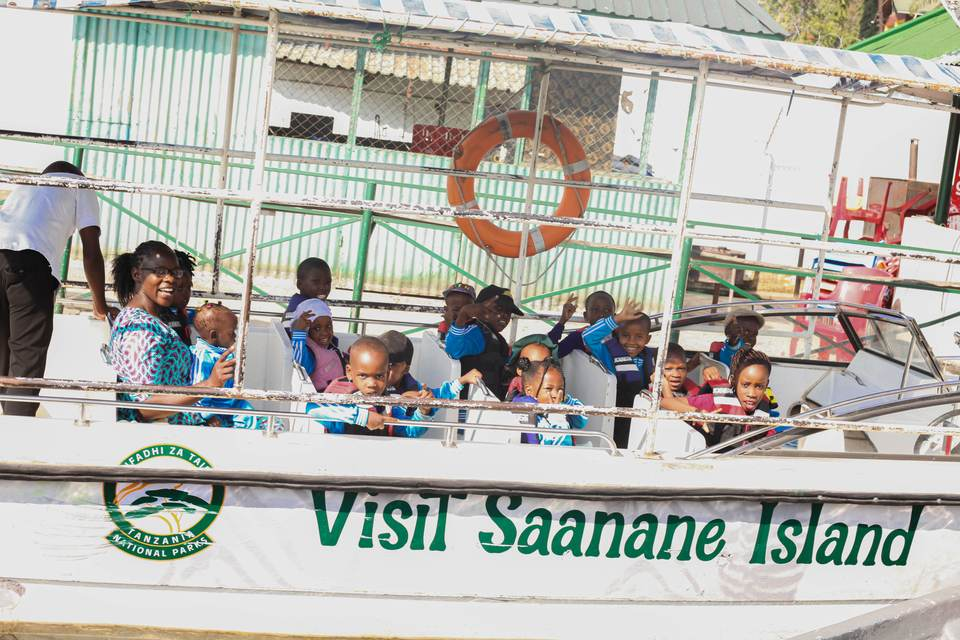
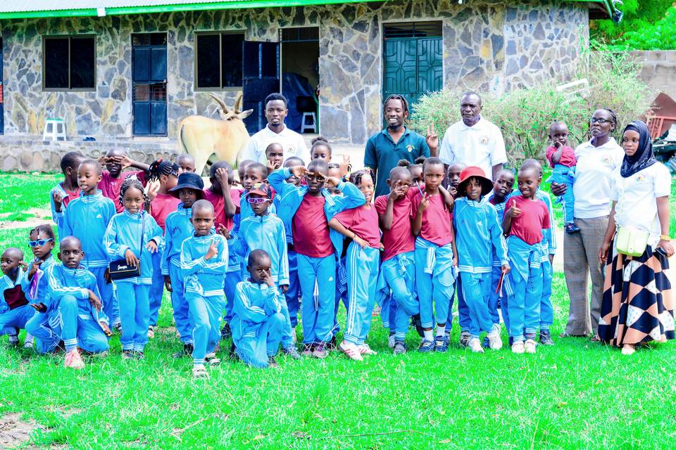

A supervised school visit gave Jupe Hills pupils a chance to see Mwanza’s natural environment, practise travelling safely together and turn their questions into real observations.

Preparing for the day
Teachers spoke with pupils about listening carefully, staying with the group and respecting animals and shared spaces. On the boat, every child wore a life jacket and remained under adult supervision.
Seeing and asking
The visit gave children new things to name, compare and discuss. Teachers encouraged them to notice habitats, animal movement and the relationship between the island and Lake Victoria.

Bringing the experience back to school
After the trip, pupils could use conversation, drawing and writing to describe what they saw. Experiences like this help children connect classroom language and knowledge with the world around them.